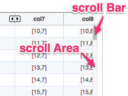
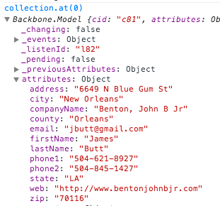

W5 Grid 생성하기
W5 Grid는 아주 간단한 코드만으로 생성할 수 있습니다.
이렇게요.
new w5.Grid({
el : "#grid1", // id가 gird1인 DOM Element에 W5 Grid를 생성합니다.
collection : data, // 준비된 data를 넣습니다.
colModel : colModel, // colModel 사전 정의가 필요합니다.
}).render();
더 들어가서...
W5 Grid는 new 연산자를 이용하여 w5.Grid()의 인스턴스를 생성합니다. 생성 시 그리드 객체에 대한 메타 정보를 정의하고, render()를 통해 화면에 그립니다. 이는 Grid 객체를 달리 정의할 수 있으며, 원하는 시점에 render()을 호출하여 DOM에 삽입할 수 있음을 뜻합니다.
w5.Grid()의 인스턴스 생성과 화면에 그리기를 한번에 한다면 일반적으로 다음과 같이 사용합니다.
var grid1 = new w5.Grid({
el : "#grid1",
tagName : "section",
className : "gridStyle01",
id : "swapID",
option : {
tagName : "section",
width : "600px",
height : "400px",
caption : "Created W5 Grid",
rowNum : 20,
...
},
collection : data,
colModel : colModel,
defaults : function () {
return {
email: '',
web: '',
...
};
}
}).render();
el 속성은 W5 Grid를 삽입할 타겟이 되는 블록요소의 ID를 지정합니다.
이 속성은 table도 될 수 있으며, 그럴 경우 table 안의 데이터를 토대로 W5 Grid로 변환시킵니다.
table을 W5 Grid로의 변환은 이 문서를 참고해 주세요.
tagName 속성은 W5 Grid 최상위 태그의 태그명을 설정할 수 있습니다. 위와 같은 코드에선 W5 Grid의 최상위 태그가 section이 되며, 아무것도 지정하지 않았을 경우에는 DIV 태그로 그려집니다.
className API가 아닌 렌더 시점에도 w5 Grid에 class를 줄 수 있습니다.
이 속성으로 준 className은 W5 Grid의 최상위 태그에 css 클래스로 들어가고, white space로 HTML의 class 문법과 동일하게 띄어쓰기로 여러가지 클래스를 한꺼번에 줄 수 있습니다.
id는 el로 지정한 엘리먼트의 id를 지정한 새로운 id로 지정합니다.
collection은 W5 Grid에 바인딩될 데이터를 넣습니다. 이 collection은 2차원 배열이 될 수 있으며, column의 id을 key로 가지는 JSON array 형태의 값도 넣을 수 있습니다.
Backbone의 Collection을 이용한 방법도 있습니다.
defaults는 새로운 row가 추가되었을 경우 등 데이터가 없을 경우 초기값을 설정합니다. function()으로 넘겨주며, column의 id을 key로 값을 지정합니다.
W5 Grid 생성하기 위해서는 colModel(Column Model)이 필수이며, 부가적인 설정들을 Option으로 선택할 수 있습니다. Column Model과 Option에 대한 속성(Property)는 다음과 같습니다.
Column Model
colModel은 column들의 세부 정보를 정의합니다. column의 width, id, style, display type등 세부 속성을 설할 수 있습니다.
Column Model 속성(Property)
| Property | Required | Type | Default | 설명 |
|---|---|---|---|---|
| id | O | unique string | must not empty | 해당 column의 대표 key를 지정 |
| width | X | string, number | 100px | 해당 column의 width를 지정. |
| class | X | string | null | 해당 column들 cell에 해당되는 cell(td)들에 css class를 넣음 |
| style | X | string, object | null | 해당 column들 cell에 style을 지정. cell(td)들에 style 속성으로 들어감. |
| headerLabel | X | string | id | 해당 column의 label text를 지정. render의 table header(th)의 text node가 됨. |
| hidden | X | boolean | false | render시 해당 column을 숨김 |
| flex | X | number | null | 가로 스크롤을 생성하지 않고, option에 지정된 width 값을 균등 분할해 flex로 정한 비율만큼 width를 지정한다. |
| sortable | X | boolean | true | 해당 column의 label을 더블클릭하여 데이터 정렬(오름차순, 내림차순, 정렬해제)할 이벤트를 바인딩 할 지의 여부 |
| dataType | X | string | null | 해당 column에 해당하는 셀들의 데이터 타입을 지정. 타입은 Number, String, Boolean이 있다. |
| displayType | X | string | "text" | 해당 column에 해당하는 셀들의 display type을 지정. display type에는 text, select, checkbox, radio,
link, img, button, custom이 있으며, custom은 underscroe의 template()으로
원하는 html 코드를 삽입할 수 있다. |
| options | X | object | null | 해당 displayType 중 label과 value와 같은 item list에 대한 세부 정보가 필요할 경우 사용됨. checkbox, radio, select가 이에 해당된다. |
Option
W5 Grid 인스턴스를 생성할 때 선택적(optional)으로 설정할 수 있는 Property를 설명합니다.
Option 속성(Property)
| Property | Required | Type | Default | 설명 |
|---|---|---|---|---|
| width | X | stirng, number | 100% | grid의 width가 될 px 값 |
| caption | X | string | null | grid의 title이 될 문자열 |
| rowNum | X | number | 10 | 한 스크롤당 보여질 row의 수 |
| vScrollDegree | X | number | rowNum | Scroll Area 클릭시 넘어갈 row의 수 |
| colOrder | X | array | data | column들의 순서를 정함. colModel의 id들을 array로 순서를 나열한다. |
| frozenColumn | X | number | 0 | 가로 스크롤링이 되어도 계속 표시될 왼쪽부터의 컬럼의 수 |
Scroll Area

직접 해보세요!
인스턴스 생성과 render()을 동시에
See the Pen W5Grid - Basic 01. Try yourself! by w5 (@w5) on CodePen.
원하는 시점에 render()
See the Pen W5Grid - Basic 02. Try yourself! by w5 (@w5) on CodePen.
Data 형태에 따른 W5 Grid 생성
2차원 배열로 W5 Grid 생성하기 Live Sample
2차원 배열의 구조는 다음과 같습니다.
[
[0, "", "[0,2]", "[0,3]", "[0,4]", "[0,5]", "[0,6]", "[0,7]", "[0,8]", "[0,9]"],
[1, "a", "[1,2]", "[1,3]", "[1,4]", "[1,5]", "[1,6]", "[1,7]", "[1,8]", "[1,9]"],
....]
See the Pen W5Grid - Bsic 03. 2차원 배열로 W5 Grid 생성하기 by w5 (@w5) on CodePen.
JSON으로 W5 Grid 생성하기 Live Sample
JSON 구조는 다음과 같습니다.
[
{ "c0": 0,
"c1": 0,
"c2": 0,
"c3": 0,
"c4": 0,
"c5": 0,
.... },
{ "c0": 0,
"c1": 1,
"c2": 2,
"c3": 3,
"c4": 4,
"c5": 5,
.... },
....]
See the Pen W5Grid - Bsic 04. JSON으로 W5 Grid 생성하기 by w5 (@w5) on CodePen.
Backbone 의 Collection 으로 W5 Grid 생성하기 Live Sample
// Backbone.Collection 에 Server 와 Fetch(Sync) 를 위한 URL 을 지정한다.
var List = Backbone.Collection.extend( { url: 'http://w5.io/dist/data/sample_499.js' } ),
// Backbone.Collection Instance 를 생성한다.
collection = new List();
var grid1 = new w5.Grid({
....
// w5.Grid 의 collection property 에 Backbone.Collection Instance 를 지정한다.
collection : collection
});
// Backbone.Collection API 인 fetch 를 이용하여 데이타를 적제한다.
collection.fetch({ reset: true,
success: function (data) {
grid1.render();
}
});
일반적인 fetch 는 위와 같이 실행하면 되지만 아래 예제와 같이 'Access-Control-Allow-Origin' 이슈가 있는 경우, jsonp 를 이용할 수 있다.
// fetch dataType 옵션을 jsonp 로 설정
collection.fetch( { dataType: 'jsonp' } );
// jsonp callback 에서 collection 에 데이타를 적재한다.
var success = function(data) {
collection.reset( JSON.parse(data) );
grid1.render();
}
Collection 의 첫 번째 Backbone.Model 의 구조는 다음과 같다.
collection.at(0)

See the Pen W5Grid - 09 Create w5.Grid from Backbone.Collection by w5 (@w5) on CodePen.